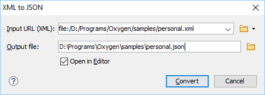

XML to JSON Converter
Online XML to JSON Converter
For a simple ONLINE tool for converting a single XML file to JSON, or vice versa, go to: https://www.oxygenxml.com/xml_json_converter.html.
Converting XML to JSON in Oxygen
Oxygen XML Editor includes a useful and simple tool for converting XML files to JSON. The XML to JSON action for invoking the tool can be found in the menu.
-
Select the XML to JSON action from the menu.
Step Result: The XML to JSON dialog box is displayed:
Figure 1. XML to JSON Dialog Box  - Choose or enter the Input URL of the XML document.
- Choose the path of the Output file that will contain the resulting JSON document.
- Select the Open in Editor option to open the resulting JSON document in the main editing pane.
- Click the Convert button.
Result: The original XML document is now converted to a JSON document.
Conversion Details
- Some XML components are ignored (e.g. comments and processing instructions).
-
If any elements contain attributes in the XML document, the attributes are converted to properties in the converted JSON document. If the XML document contains more than one element with the same name, they will be converted into an array of object in the converted JSON document.
For example, the following XML document:<personnel> <person id="person.one"> <name>Boss</name> </person> <person id="person.two"> <name>Worker</name> </person> </personnel>
it is converted to:{ "personnel": { "person": [ { "id": "person.one", "name": "Boss" }, { "id": "person.two", "name": "Worker" } ] } } -
If the XML document contains elements with mixed content (text plus elements), the converted JSON document will contain a
#textproperty with its value set as the text content. If there are multiple text nodes, the subsequent#textproperties will contain a number (e.g.#text1,#text2). If there are multiple elements with the same name, the first property will have the element name and the subsequent properties will contain a number (e.g. b, b#1, b#2).<p>This <b>is</b> an <b>example</b>!</p>
is converted to:{ "p": { "#text": "This ", "b": "is", "#text1": " an ", "b#1": "example", "#text2": "!" } } -
If the XML document contains element names that contains hexadecimal codes (for example, if they were escaped during a JSON to XML conversion), it will be converted to the normal character value in the converted JSON document.
<_X24_id>personnel-id</_X24_id>
is converted to:{"$id": "personnel-id"}